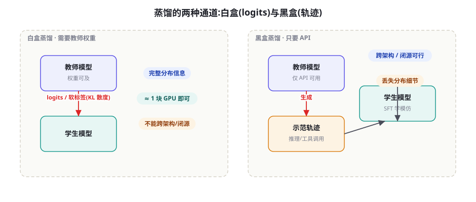
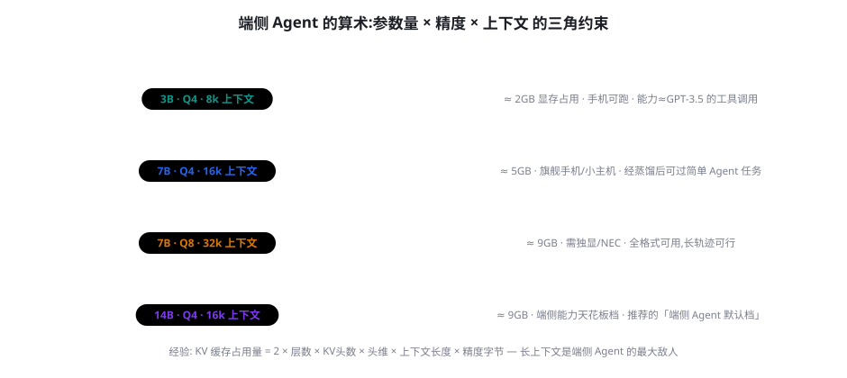

蒸馏与小型化：让小模型拥有 Agentic 能力
前面几章的训练都默认「模型越大越好」，但生产的账本是另一套逻辑：延迟、成本、隐私、离线可用——每一项都在把模型往小推。本章讲清把 Agentic 能力「装进」小模型的完整技术栈：白盒蒸馏的 logits 转移、黑盒蒸馏的轨迹模仿、Agent 轨迹蒸馏的特殊难点（长轨迹的注意力稀释与工具格式）、以及端侧 Agent 的算术——参数量、量化精度、上下文长度三者如何瓜分有限的显存。小模型做不了大模型的所有事，但可以在「你的任务」上做得一样好——这是本章的核心主张。
两条蒸馏通道：白盒与黑盒

白盒蒸馏（logits 蒸馏）：教师模型对学生模型的每个 token 位置输出完整的概率分布，学生用 KL 散度去拟合「教师分布」而非独热标签——学生学到的不是「答案是什么」，而是「教师在各选项间的犹豫程度」。这份「软标签」携带的暗知识（错误的相对似然、备选答案的排序）是独热标签无法企及的。经典配方（Hinton et al. 2015）的两个关键超参：温度 T——教师 softmax 加温（T=2~6 常用）让分布变软、暗知识显形；损失混合——KL（对教师的模仿）与 CE（对真标签的学习）加权混合，权重通常 0.5~0.9 偏向 KL。工程现状：LLM 时代的全量 logits 蒸馏被序列长度放大得昂贵（每个位置都要教师前向），实用中多用「稀疏采样」——只在关键位置（工具调用的参数 token、推理的转折词）做 logits 转移。黑盒蒸馏（轨迹蒸馏）：教师只以 API 形式存在，能拿到的只有生成的文本——蒸馏退化为「收集教师的输出轨迹，SFT 训练学生」（第 39 章的轨迹构造 + 本章的质量闸门）。它丢失分布细节，但赢在两个工程现实：跨架构、跨闭源边界可行（GPT-4 级能力可以合法蒸馏给开源 7B——只要许可允许）；管线与普通 SFT 完全同构——团队已有的 SFT 基建零改造复用。
「7B 模型怎么可能装下 70B 的能力？」——严格地说装不下，但它不需要装下。蒸馏有效的两个理论支点：① 暗知识的本质是「更平滑的优化面」——教师的软标签为学生标出了损失面的「缓坡」，学生不必独自探索悬崖——最终能力上限仍受学生容量约束，但到达上限的训练效率大幅提高（相同数据量下，蒸馏学生的收敛速度通常是冷启动学生的 2~5 倍）。② 任务的可分解性——大多数 Agent 任务的「决定性知识」并不是海量参数才能容纳的世界知识，而是「流程素养」（何时查、查什么、怎么用结果）——流程素养是紧凑的、可模仿的。这也解释了蒸馏的边界现象：小模型蒸馏后在「流程性任务」上逼近教师（工具调用正确率可达教师的 95%+），而在「知识密集任务」上差距保持（世界知识的容量差异是物理性的）。给你的启示：蒸馏前先做任务的知识密度分析——流程占比高的任务才值得蒸馏。
Agent 轨迹蒸馏的三个特殊难点
把普通 SFT 换成 Agent 轨迹，蒸馏立刻多出三个普通文本蒸馏没有的问题：① 长轨迹的注意力稀释——一条 20 步轨迹有上万 token，但「决定性信号」（几次关键调用）只占其中 5%——SFT 损失被大量「过渡 token」稀释，学生学会的是说话风格而非调用策略。对策：加权损失——给工具调用 token 与关键决策 token 2~5 倍损失权重（部分训练框架支持 token-level weights）；或分段蒸馏——只对「决策段」（观测 → 思考 → 动作）计算损失，跳过环境返回的长文本。② 教师的「隐性检索」——教师旗舰模型把很多 API 知识记在参数里（直接写出正确的参数格式与默认值），学生没这份记忆，模仿时「跳过了教师没写出来的查证步骤」。对策：显性化改写——蒸馏管线里加一步「教师自我注释」：让教师在轨迹中把「我为什么知道该这么传参」的查证动作显式写出（哪怕教师实际没做）——这是给学生的「脚手架」，第 25 章「笔记外化」的训练版。③ 格式脆弱性——小模型对调用格式的保持力弱（第 44 章的格式性阵亡在小模型上更凶），蒸馏数据里格式正确的示范占 100% 反而危险（学生没见过「错误后如何回到正轨」）。对策：混入 10~15% 的「格式事故-恢复」轨迹——这条对策与第 45 章失败轨迹的再利用完全汇合。
| 难点 | 症状（学生模型的表现） | 对策 | 成本 |
|---|---|---|---|
| 注意力稀释 | 风格学得像、调用策略差；评测分低于教师但 loss 很低 | 决策段加权损失 / 分段蒸馏 | 低（框架配置） |
| 教师隐性检索 | 参数幻觉集中于「冷门工具」；常见工具反而准 | 教师自我注释（显性化查证步骤） | 中（多一轮生成） |
| 格式脆弱 | 长任务后段格式崩坏；出错后无法恢复 | 混入事故-恢复轨迹 | 低（数据配比） |
量化与端侧算术

量化的快速分层（第 12 章讲过推理侧，这里从「Agent 能力保全」的角度重审）：Q8/int8——几乎无损，任何能力都保留，显存减半；Q4（GPTQ/AWQ 类）——通用文本能力轻微受损（1~3%），但工具调用与格式遵循是重灾区（结构化输出的 token 边界对量化误差敏感），必须跑一遍 BFCL 类评测再定；Q2/极低比特——通用能力显著受损，Agent 场景基本不可用（格式崩坏率飙升），不推荐。端侧的显存三角约束：权重占用 = 参数量 × 每参数字节（Q4≈0.5B/7B 参数 ≈ 3.5GB），KV 缓存占用 ∝ 上下文长度（Agent 的多轮轨迹让上下文暴涨——16k 上下文的 7B-Q4 模型，KV 缓存可达权重的 40%+），系统占用（OS + 推理运行时占 1~2GB）。三角形的瓜分逻辑：先保上下文预算（Agent 的刚需），再买参数量（能力），最后剩下的精度余地用来换更小的模型——与通用聊天应用「先保参数量」的分配次序恰好相反，因为 Agent 的上下文消耗是结构性的、不可压缩的（除非做第 26 章的压缩工程）。
几个里程碑式的蒸馏工作，标出「小模型能装多少 Agent 能力」的进化线：Orca 2（Microsoft, 2023, arXiv:2311.11045）的「解释性蒸馏」——不只让学生模仿答案，还教「推理策略的选择」（何时逐步推理、何时直接作答），7B 学生在推理基准上追平 13B 常规训练——教学策略比教学量更重要；AgentLM/AgentEvol 系（2024）证明 7B 级模型经轨迹蒸馏可以完成三档难度中的前两档；ToolACE（2024, arXiv:2412.10302）与 APIGen 系（Salesforce, 2024, arXiv:2406.18518）把「工具调用数据合成 + 多模型验证」做成流水线，7B 学生的 BFCL 成绩进入当时的头部梯队——「数据工程弥补参数差距」的又一实证。综合的证据模式：2023 年 7B 在 Agent 任务上「不可用」，2025 年「可用但不万能」——改进几乎全部来自数据与训练方法，而非架构。这对资源受限团队的含义：小型化不是等模型变小，而是把第 44-47 章的方法全部用足。
蒸馏管线的代码骨架
把黑盒轨迹蒸馏的最小管线写成代码，四个阶段（采集 → 改写 → 训练 → 验证）对应本章的全部要点：
def distill_pipeline(teacher, student, env, tasks):
# 阶段一: 采集 — 教师在环境里跑轨迹, 每任务多路采样
trajs = []
for task in tasks:
for t in [0.5, 0.8, 1.0]: # 多温度: 多样性
trajs += teacher.run(task, env, temp=t)
# 阶段二: 改写 — 本章三难点在此各就各位
for tr in trajs:
tr.annotate() # 自我注释: 显性化查证步骤
tr.reweight() # 决策段损失权重 x3
tr.snapshot() # 冻结环境状态快照(失败续跑用)
# 阶段三: 训练 — 加权 SFT
sft(student, trajs, loss_weights="decision_segments")
# 阶段四: 验证 — 学生自己上场 + 影子域
student_scores = eval(student, env, tasks)
shadow_scores = eval(student, env, unseen_tasks)
if shadow_gap(student_scores, shadow_scores) > 0.2:
evolve_tasks(trajs) # 背题警报: 扩分布
return student, student_scores四阶段中「阶段二：改写」是本章的独有增量——普通 SFT 管线直接删掉这一段即可。另一个值得注意的工程点：采集阶段的多温度采样不只是多样性手段，它同时产出「同任务不同解法」的轨迹束——这是后续 DPO 对构造（同任务、不同路径）的天然原料，蒸馏与偏好的数据基建在这里合流。
关于「白盒蒸馏在 LLM 时代的实操变体」再补一段，因为开源社区的实践已经发展出比教科书更精细的招式：① 层间映射蒸馏——教师与学生层数不同时，做投影矩阵把教师的中间层表征映射到学生（MiniLLM 系工作），比只蒸 logits 多一层「过程监督」——代价是管线复杂度翻倍，建议在 logits 蒸馏收益确认后再上；② 数据增广蒸馏——不蒸模型蒸数据：用教师的 logits 对合成数据做「软标签增广」（每条数据除了文本答案还存教师分布的 top-k），训练时混合硬软两种损失——这是「白盒信息」在黑盒约束下的最大保留法（教师跑一次、存下来反复用，训练阶段不再需要教师在线）；③ 特征回放——教师的关键中间表征（如「决定调用的那一层」的激活）作为学生的辅助预测目标——多任务式的辅助头，推理时丢弃、训练时受益。三者的共同思想：白盒与黑盒不是二分，而是一个「教师信息保真度」的连续谱——你的管线在谱上的位置由教师可用性与训练预算共同决定，能多拿一点教师信息，学生的起点就高一点。
小型化决策卡：什么该小、什么该大
小型化的正确姿势不是「把整个 Agent 变小」，而是拆开 Agent，分别决定每块的大小。决策卡四问：① 什么任务占你的流量 80%？——高频简单任务（查、填、格式转换）交给蒸馏小模型；低频复杂任务兜底到旗舰模型（路由架构，第 32 章模型路由）。② 你的任务知识密度高吗？——流程性任务蒸馏收益大（上文理论），知识密集任务蒸馏后差距会暴露（规划为「小模型 + 强检索」的混合形态——检索把知识外置，小模型只保留流程素养）。③ 隐私边界在哪？——敏感数据不出域的需求是端侧/私有化的硬约束：把「数据敏感的环节」（预处理、脱敏、分类）做成端侧小模型，把「开放数据的环节」（推理、生成）留给云端—— Privacy 分层，第 61 章的架构呼应。④ 失败的代价谁承担？——小模型的失败率高于教师，高危动作（生产变更、资金操作）必须留在「强模型 + 人工确认」的通道（第 59 章风险分层的训练侧呼应）。四问的组合答案几乎总是「混合舰队」：小模型做量、大模型做难、路由做分配——单点小型化是伪命题，体系小型化才是工程。
做一次「蒸馏收益的量化预演」，不训练、只算账：取 200 条你的典型任务，让旗舰模型与候选小模型（如 Qwen 7B、开箱即用）各跑一遍，对比三个指标的差距——任务通过率差距、平均延迟比、单任务成本比。然后计算「蒸馏可捕获的价值」：假设蒸馏能把小模型在流程性子任务上的通过率提升到旗舰的 95%（用第 44 章的评测集判定哪些子任务是流程性的），乘上高频任务的流量占比与成本差——得到一个「值得/不值得蒸馏」的量化判据。实际数字常常出人意料：高频简单任务的成本差距可达 10~50 倍，哪怕通过率只追回 20 个百分点，全年的账也是一边倒的。
端侧的推理运行时生态再补一张速查表（选型视角），因为「模型小了」只是第一步，「跑得起来」才是终点：llama.cpp / Ollama——CPU/统一内存生态的主力，GGUF 量化格式的事实标准，适合消费级设备与快速原型；MLC-LLM——移动端（iOS/Android）编译优化路线，把模型编译成平台原生代码；ONNX Runtime / OpenVINO——Windows/Intel 硬件的稳妥路线，企业端侧部署常见；MLX——Apple Silicon 统一内存的官方生态，Mac 端侧的默认选项。选型的三个判据：目标硬件（有无 GPU/统一内存）、延迟敏感度（交互式 Agent 要求首 token 快）、以及工具调用格式的兼容性——端侧运行时对「结构化输出约束」（JSON Schema 约束解码）的支持参差不齐，而 Agent 对格式的要求是硬性的——把「约束解码支持」列在端侧运行时选型的第一判据，这是与聊天应用选型最大的不同点。
继续把「决策卡四问」落到一个具体的角色扮演场景，帮助记忆：假设你负责一个客服 Agent 的成本优化，老板说「把 GPT-4 换掉，账单太高」。按决策卡走一遍——第一问：拉三个月日志，发现 78% 的会话是「查订单、查物流、改地址」三类流程任务（蒸馏候选）；14% 是「投诉安抚、多单纠纷」（知识+情感密集，留旗舰）；8% 是「退款审核」（高危，留强模型 + 人工复核）。第二问：流程任务里，「物流查询」需要实时接口知识（外置给检索——工具描述 + API 文档即可），「改地址」是纯流程（蒸馏收益最大）。第三问：客服对话含个人隐私——预处理与 PII 识别必须私有化（端侧小模型的第一块），后续生成可上云或可换自托管中型模型。第四问：退款审核失败代价高——留在人工通道不动。最终方案不是「换模型」而是「拆体系」：7B 蒸馏模型接 78% 的流程流量（成本 1/30），旗舰模型只接 14% 难题，退款通道不变——月账单降 80% 的同时，投诉类会话的质量反而因旗舰专注而上升。小型化的故事永远是「重新分配」而不是「降级」——这个案例的完整工程实现（路由、灰度、回退）在第 80 章成本经济学里会再算一次账。
三个高频疑问
Q：蒸馏出的模型会不会「只会背题」、泛化很差？会不会背题取决于蒸馏数据的多样性，不取决于蒸馏本身——这与第 39 章 SFT 的泛化规律同源。三个防背题的具体纪律：① 数据侧——轨迹的任务类型覆盖度检查（同类任务超过 30% 就要预警），Evol-Instruct 的算子直接可用（对轨迹的任务描述做广化进化）；② 训练侧——蒸馏 SFT 之后接一轮 RLVR/GRPO（用小模型自己采样、环境验证）——RL 阶段是「去背题化」的天然工序（模型必须真完成任务才有分）；③ 评测侧——影子域评测（第 44 章）必跑：训练域之外的泛化分数低于域内分数 20 个百分点以上，就该回炉改数据而不是调参数。
Q：老师选谁？越强的教师蒸馏效果越好吗？不完全是——存在「教师-学生能力鸿沟」问题：教师强到与学生「思考方式断裂」时（例如教师一步完成的推理，学生需要拆五步），直接模仿的迁移效率反而下降。Orca 2 的「策略教学」思路是解法之一（教策略而非教答案）；工程上更实用的两招：中间人蒸馏——先用比学生大 1~2 个数量级（而非 10 倍）的教师蒸一版，再用它当教师蒸目标学生（接力式）；选择性模仿——教师在「学生能力射程内」的轨迹直接用，射程外的（教师的关键步骤学生根本不会）改写拆解后再入池。选教师的实操标准：在你的任务上「通过率 60~85%」的教师是最好的教师——全对说明任务对它太简单（轨迹含金量低），全错说明射程外（拆解成本高）。
Q：端侧 Agent 上下文不够怎么办？端侧上下文是「最稀缺货币」，按优先级花：① 结构化压缩——工具返回值进门就剪（只留 Schema 声明的字段，第 26 章 JIT 上下文），这一条能省 50%+；② 外置记忆——轨迹摘要落盘（笔记），当前窗口只带摘要 + 最近 2~3 步全文（第 25 章 MemGPT 式分页的端侧简化版）；③ 任务分解——长任务拆成子任务队列，每个子任务独立开窗（LangGraph 式超步的端侧版，第 24 章）；④ 实在不行换架构——「端侧小模型做意图识别与预处理 + 云端强模型做重活」的混合架构（上面的决策卡第 ③ 问），本质上承认了端侧的边界。反向提醒：不要为了省上下文牺牲「工具结果的原始保真」——剪掉的应该是格式冗余，不是信息本体（剪错的代价在第 22 章「校验依据」上会反噬）。
本章在全书网络中的连接：上游是第 39 章（SFT——蒸馏的落地形式就是高质量 SFT）、第 44-47 章（工具训练/Agent RL/合成数据——蒸馏数据的四大来源）、第 12 章（推理与量化——端侧算术的推理侧知识）；横向与第 32 章（模型路由——混合舰队是蒸馏的部署形态）配套；下游通向第 49 章（Self-Play——蒸馏之后小模型的持续成长路径）、第 61 章（隐私——端侧化的一类核心动机）、第 76 章（成本经济学——蒸馏的收益最终以成本账本结算）。复习锚点：一张双通道图（48-1）、三难点表（48-1 表）、端侧三角（48-2）、决策卡四问。
收束全章的「小模型哲学」：过去两年「小模型能不能做 Agent」的问题被证据翻转了两次——2023 年的共识是「不可用」，2025 年的共识是「流程可用、知识外包」。翻转的动力不是模型架构（仍是 Transformer），而是数据方法（本章）与系统架构（路由/检索/记忆的外置）。这个模式的普适表述：模型的能力边界在收缩，系统的能力边界在扩张——小型化的本质是把「智能」从参数里搬到架构里。你的团队如果要建小型化路线图，正确的起点不是「买哪个小模型」，而是「哪些能力可以外置」：知识外置给检索（第 13 章）、记忆外置给存储（第 25 章）、流程外置给编排（第 24 章）、验证外置给环境（第 43 章）——外置完成后，参数里需要装的只剩「判断与格式」，而这两样，蒸馏给得足。
还有一个与第 49 章直接衔接的伏笔值得点出：蒸馏解决的是「能力从大到小的迁移」，但没有回答「迁移之后小模型怎么继续成长」——教师的轨迹是静态的快照，而环境在变、工具在变、业务在变。小模型的持续成长有三条路线，将在下一章展开：吃自己 RL 的粮食（Self-Play 与自博弈——小模型在自己的环境里继续进化）、吃现实反馈的粮食（飞轮的持续回流——第 47 章的管线在小模型上同样运转）、以及吃教师更新的粮食（教师的版本升级触发蒸馏管线的重跑——「蒸馏即部署流水线」的持续化形态）。蒸馏不是终点站，是小模型起点线的画笔。
数字感补充（蒸馏项目的成本量级，2025 年经验值）：黑盒蒸馏的数据成本——旗舰 API 跑 5000 条 Agent 轨迹（平均 15 步、每步 2k token），约 1.5 亿 token 生成量，按旗舰价格 50~150 美元量级；训练成本——7B 全参 SFT 5000 条轨迹，八卡 A100 一到两天；LoRA 则单卡数小时（第 39 章的量级表）。与收益对照：前文客服案例里月账单降 80%——蒸馏项目的回本周期通常以月计，这是它成为生产团队「最高频训练项目」的原因。相对地，它的风险集中在「能力保全」上：三难点的每一个都会悄悄吃掉通过率——所以第 44 章的评测集必须在蒸馏前后各跑一次，「评测差值」是蒸馏项目的真正验收单，体积与延迟的改善只是副产品。
最后给一个容易误判的技术选型提醒：「小模型 + 长提示」常常是「蒸馏」更好的替代品。很多团队一上来就规划蒸馏项目，但真正的问题只是「小模型不知道你的领域规则」——这类「知识缺口」用提示就能补（工具描述写好、SOP 摘要放进系统提示、少样本示例给足），成本是蒸馏的百分之一。判断标准回到第 38 章的训练时机框架：提示补「知识」，训练补「行为」——小模型「不知道该先查库存」是知识问题（提示可解）；「知道该查但格式总崩」「查到了却不会用」是行为问题（才值得蒸馏）。先做一轮「提示极限测试」（把提示写到最好的小模型方案，跑第 44 章评测集），蒸馏的立项书应该建立在这份测试的残差上——残差小，项目取消；残差大，且残差集中在行为层，立项的理由就硬了。这个次序能帮团队避开最常见的小型化陷阱：用大炮打蚊子，还打不中。
本章小结
- 两条通道：白盒（logits 软标签、暗知识、需权重）与黑盒（轨迹模仿、跨闭源、SFT 同构）——由「能拿到什么」决定。
- 蒸馏有效性的两个支点：软标签的平滑优化面（提效率）与任务流程素养的紧凑性（定上限）——知识密集任务不是好标的。
- Agent 轨迹蒸馏三难点：注意力稀释（加权/分段）、教师隐性检索（自我注释显性化）、格式脆弱（混入事故-恢复轨迹）。
- 量化分层：Q8 无损、Q4 要过工具评测、Q2 不可用；端侧显存三角先保上下文——与聊天应用的分配次序相反。
- 小型化是体系工程：混合舰队（小模型做量、旗舰做难、路由分配、高危留人工）——单点小型化是伪命题。
自测题
- 对你的任务做「知识密度分析」：列出三个子任务判断其流程/知识占比，并据此判断蒸馏的预期收益。
- 为什么「教师自我注释」能缓解参数幻觉？它牺牲了什么？（提示：轨迹的真实性 vs 教学价值）
- 计算你的 Agent 在 7B-Q4、16k 上下文下的显存占用（权重 + KV 缓存），并与你的目标设备预算对比。
- 蒸馏学生的影子域分数比域内低 25 个百分点——按本章的三条纪律（数据/训练/评测）各写一个补救动作。
参考文献与延伸阅读
- Hinton, G., Vinyals, O., & Dean, J. (2015). Distilling the Knowledge in a Neural Network. arXiv:1503.02531
- Mitra, A. et al. (2023). Orca 2: Teaching Small Language Models How to Reason. arXiv:2311.11045
- Li, Z. et al. (2024). ToolACE: Winning the Points of LLM Function Calling. arXiv:2412.10302
- Liu, Z. et al. (2024). APIGen: Automated Pipeline for Generating Verifiable and Diverse Function-calling Datasets. arXiv:2406.18518
- Frantar, E. et al. (2022). GPTQ: Accurate Post-Training Quantization for Generative Pre-trained Transformers. arXiv:2210.17323；Lin, J. et al. (2023). AWQ: Activation-aware Weight Quantization. arXiv:2306.00978
- Shao, M. et al. (2024). Distilling Reasoning Capabilities into Smaller Language Models. arXiv:2404.03294（一致性保持蒸馏）